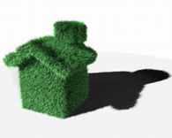
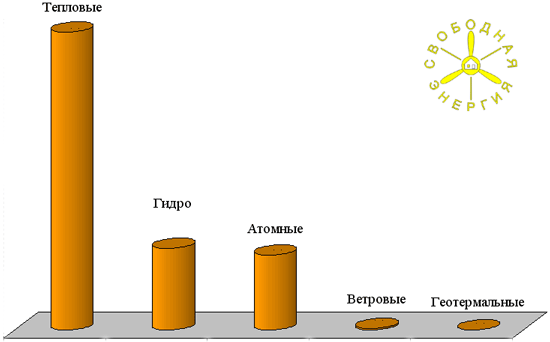
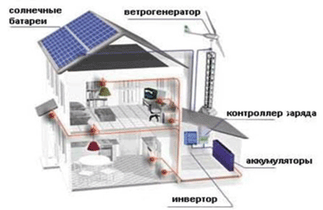
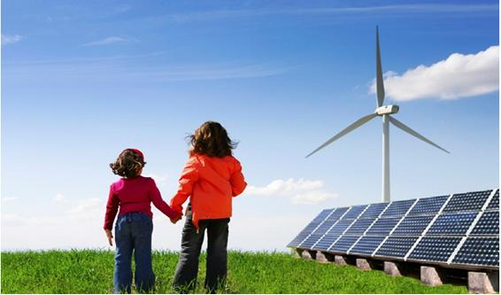
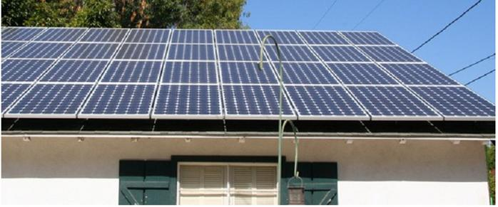
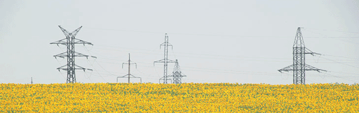
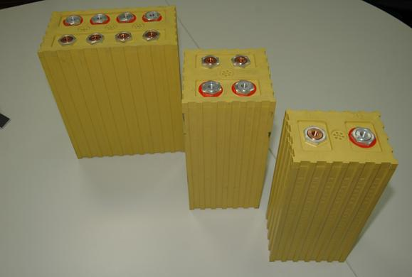
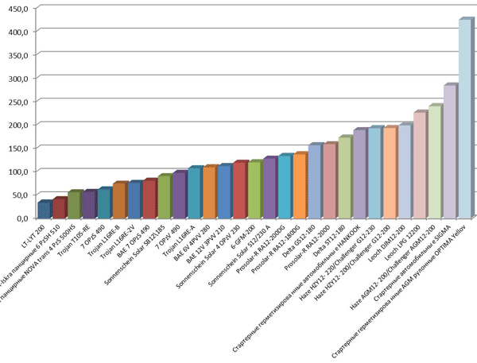

О персональных зеленых электростанциях


Проблема экологии становится все более острой и актуальной, население земного шара растет не по дням, а по часам, с обратной пропорциональностью тают запасы углеводородов на планете. Назрела необходимость резкого сокращения выброса вредных веществ, образующихся от сжигания углеводородов в атмосферу. Наступает эпоха извлечения энергии из чистых возобновляемых источников. Нам надо построить экологически чистое будущее, и времени для этого осталось не так уж много. Выход есть – альтернативные источники энергии и применение технологии Smart Grid (Интеллектуальные Сети).
Какие предпосылки имеются для применения этих новшеств в России?
Ежегодно в России теряется при передаче огромное количество
электроэнергии. От общего объема около 13-14%. Необходимо учитывать
особенности структуры линий электропередач и рынка электроэнергии в
целом. В России 52% оборудования уже превысило свой нормативный срок
(30-40 лет), а 7% – отработало его дважды. Не секрет (данные Росстата),
что в настоящее время в России около 65% электричества
вырабатывается на тепловых электростанциях. Порядка 1 – 2 % всей
получаемой энергии поступает из геотермальных, ветряных источников и солнечных батарей, что по сегодняшним меркам крайне мало. Ведь в Европе, уже сегодня, эта доля составляет 15 – 25%.

- Тепловые электростанции - 65,40%
- Гидроэлектростанции - 18,00%
- Атомные электростанции - 16,50%
- Ветровые электростанции - 0,37%
- Геотермальные электростанции - 0,37%
Альтернативные источники энергии (а это, прежде всего солнечные батареи и ветрогенераторы) могут поставлять энергию, как правило, с помощью контролеров заряда аккумуляторных батарей (АКБ) , инверторов (преобразователей постоянного напряжения АКБ в переменное 220В) и самих АКБ. При необходимости АКБ могут так же заряжаться от стационарного генератора, или от сети 220 вольт, если энергии от альтернативных источников не хватает.
Для чего нужен инвертор?Самое простое и распространенное применение инвертора — это использование его в качестве резервного или аварийного источника 220 вольт. Вы подключаете инвертор к аккумуляторной батарее , а затем включаете ваш бытовой прибор в розетку, получая мобильный источник 220 вольт. С помощью инвертора можно запитать от аккумулятора (их может быть много) , практически любой прибор как домашней бытовой, так и профессиональной техники: кухонная электротехника, микроволновая печь, электроинструменты (в том числе и мощные до 5 кВт), телевизор, стерео, компьютер, принтер, холодильник, не говоря уже о любых приборах освещения (в том числе и прожекторы). Всю эту технику Вы можете использовать где угодно (хоть в тайге, тундре, степи и т.д.) и когда Вам вздумается!
Обычные инверторы , подключенные к сети электроснабжения (например, в частном доме) в комплекте с солнечными батареями, при наличии в сети 220 В, фактически не задействованы. Солнечные батареи работают вхолостую. Система ждёт аварии в электросети.
Система автономного электроснабжения
- Солнечные батареи;
- Ветроэнергетические установки (ветряки);
- Микро или малые гидроэлектростанции;
- Термоэлектрические генераторы.
- Источник возобновляемой энергии;
- Контроллер заряда аккумуляторной батареи (для оптимизации заряда);
- Аккумуляторные батареи;
- Инвертор (преобразователь переменного тока в постоянный);
- Электротехническое оборудование (коммутация, автоматика, предохранители);
- Нагрузка (энергоэффективные приборы).
Совсем другое дело - применение гибридных инверторов.
Так чем отличаются гибридные инверторы от обычных?
С использованием гибридных инверторов появляется возможность закачивать
в сеть электроэнергию вырабатываемую альтернативными источниками , т.е.
не только подменять 220В , когда основная сеть аварийно
отключена, а и подмешивать свои 220В в работающую сеть 220В
(способность приоритетно брать энергию от альтернативных источников, а
после того, как АКБ наберут свою емкость, в случае её избытка, отдавать
энергию в общую сеть). Установка смешанной системы, в которой есть
и возобновляемые источники энергии (например, массив солнечных батарей)
и имеется промышленная сеть, сердцем которой будет являться гибридный
мощный инвертор - возможна повсеместно и является наиболее
перспективной. Здесь стоит заметить, что зарубежные гибридные инверторы
стоят в 3-4 раза дороже отечественного.
Такая смешанная, гибридная энергосистема является аналогом гибридного автомобиля. Двигателю внутреннего сгорания в нем соответствует промышленная сеть (ее электричество тоже, в основном, получается от сжигания топлива), а электродвигателю – персональная «зеленая» электростанция. Но эффект, в случае применения гибридной энергосистемы, может быть намного весомее. Ведь такой дом, имеющий смешанное энергоснабжение, сможет не только обеспечить себя электроэнергией во время аварий и отключений, не только покрыть существенную часть своего обычного внутреннего энергопотребления, но и несколько часов в сутки выдавать электроэнергию промышленного качества во внешнюю промышленную сеть. Т.е. при внедрении технологии Smart Grid (подробнее о ней далее), участники, установившие у себя «зеленые» электростанции, смогут стать экономически выгодной частью системы российского энергоснабжения. Отметим, что наиболее перспективными источниками возобновляемой энергии являются солнечные батареи. Срок их службы измеряется десятками лет, они не требуют ухода и не создают шума и иных проблем. Солнце ежедневно посылает на Землю в 20 раз больше энергии, чем ее использует всё население земного шара за год. Мы научились извлекать эту энергию, а технологический прогресс позволяет использовать возобновляемые источники энергии все более эффективно. Солнечная энергия является зеленой и безопасной для планеты, вы будете испытывать удовлетворение, зная, что оставляете мир зеленым, не загаженным местом для будущей жизни ваших детей и внуков.
Идеальная энергетика
Один из энтузиастов альтернативной энергетики, при наличии промышленной сети, установивший у себя солнечные батареи, ветрогенератор и инвертор с аккумуляторами, пишет: «…Как показал опыт, когда источники вырабатывают, например солнечные батареи выдают до полутора киловатт, а аккумуляторы полные, и дома никого нет (потребление 100 Вт), то девать добро некуда. А если еще и ветряк шарашет… Надо думать о том, куда мы денем энергию…».
Дело в том, что современные отечественные счетчики, при подаче на них обратной мощности, не вычитают ее из потребленной, а наоборот, суммируют. Вероятно, что такие «хитрые» счетчики были разработаны для борьбы с воровством. Но воровать меньше не стали, а зеленую энергию частник поставить в электросеть пока не может.
Необходимо добиваться отмены архаичных ограничений. С учетом масштабов, если подобный опыт гибридных установок распространится повсеместно, получаем гигантскую распределенную в масштабах страны электростанцию. Требуется только узаконить применение двунаправленных счетчиков и обязать электроснабженческие организации не только продавать, но и покупать выработанную потребителем энергию, пусть даже по той же розничной цене (в Европе за такую энергию государство даже доплачивает).
В Швеции уже в 2003 г. правительство обязало компании к июлю 2009г перейти на систему «умных сетей», обеспечивающих ежемесячное снятие показаний приборов учета. В настоящее время инвестиции в интеллектуальные сети обосновываются ожидаемым снижением эксплуатационных расходов для операторов систем распределения электроэнергии Это, как правило, устранение расходов на считывание показаний приборов учета, уменьшение хищений электроэнергии, дистанционная активация и деактивация услуг, более быстрое обнаружение перебоев энергоснабжения и более эффективная борьба с неплательщиками.
Домашняя электростанция
Масштабное развитие Возобновляемых Источников Энергии (ВИЭ) и технологий аккумулирования энергии (в том числе литий-ионные батареи) будет означать снижение доли централизованной крупной энергетики. Людям это даст независимость от крупных энергетических компаний, а также повышение надежности электроснабжения и снижение расходов.

Традиционно, электрическая сеть всегда строилась как система односторонней передачи. Она состояла из одной или нескольких очень мощных электростанций, связанных с потребителями энергии. Переход к возобновляемым источникам энергии и появление новых интеллектуальных устройств, требуют иного подхода – энергия может идти и от потребителей, т.е. в обратную сторону. На помощь должна прийти технология Smart Grid (интеллектуальные сети). Это уже шаг в чуть более отдалённое будущее.
Smart Grid поможет решить основные проблемы , стоящие перед энергетическими компаниями и потребителями. Smart Grid – это интеллектуальные счетчики, динамическое управление электросетями, регулирование спроса, повышение безопасности и экономия расходов. В будущем, такие счетчики смогут отслеживать потребление энергии бытовыми устройствами и поддерживать определенные правила их поведения в часы пиковой нагрузки и в разное время суток. Smart Grid необходима для более полного использования энергии из всех возобновляемых источников для их объединения с существующей энергетической инфраструктурой. По своему значению Smart Grid так же важна , как и сами возобновляемые источники энергии.
Литий-ионные аккумуляторы
- накопителей энергии, вырабатываемой альтернативными источниками (солнечные батареи, ветро-генераторы и т.д.);
- накопителей энергии для сглаживания пиков нагрузки в энергосистемах и регулирования частоты напряжения электростанций и электросетей;
- мобильных аварийных источников питания, размещённых на грузовом автотранспорте;
- источников бесперебойного питания для особо важных объектов (метрополитены, аэропорты, железные дороги, больницы, центры хранения данных и т.д.)
- отсутствие эффекта памяти после многочисленных циклов зарядки и разрядки;
- большой ресурс батареи более 5000 циклов заряд-разряд при 70% глубине разряда;
- возможность заряда большими токами за 20 минут до 70% ёмкости;
- надежность и безопасность, подтверждённые международными сертификатами;
- широкий температурный диапазон эксплуатации от -45°C до +65°C;
- сравнительно низкая стоимость батарей (в несколько раз ниже ближайших аналогов по оценке стоимости одного цикла заряд-разряд)

Такие литий-ионные аккумуляторы, выступающие в роли накопителя электроэнергии в тандеме с инвертором, солнечными панелями и ветро-генераторами позволят добиться высоких результатов в деле развития «зеленых» электростанций.
Одним из основных факторов, сдерживающих развитие сектора, является пока еще относительно высокая ( по сравнению с традиционными и другими альтернативными источниками) стоимость «солнечных» систем. Тем не менее, рост солнечной энергетики удвоился в 2010 году, а цена на солнечные батареи снизилась вдвое с 2007 года.
Так же удорожает персональную «зеленую» электростанцию и применение аккумуляторов для накопления энергии. Конечно, аккумулятор в энергосистеме все равно нужен. Но он может иметь относительно небольшую емкость, и будет использоваться лишь в редких случаях отключений и аварий в промышленных сетях. А в таком ждущем режиме, например, современный литий-ионный аккумулятор может стоять десятилетиями.
Но прогресс не стоит на месте - постепенно снижается стоимость компонентов альтернативной энергетики, например тех же солнечных батарей, а себестоимость традиционной - растет. Ожидаемое падение стоимости на литий-ионные аккумуляторы к 2016 году ожидается в пределах 40%.
Соответственно, сетевой паритет – ситуация, когда стоимость «солнечного» электричества сравняется со стоимостью электричества, генерируемого электростанциями , имеет шанс быть достигнутым в ближайшие пару лет в некоторых странах Южной Европы (Италия, Испания), а в течение 2-5 лет – и в других странах (таких как Германия, Япония и др.)
Согласно прогнозам, сетевой паритет будет, сначала достигнут в южных регионах (в течение ближайших нескольких лет), а затем к 2020-2030г. распространится и на северные регионы, в том числе и на Россию.
Пройдёт время, и практически каждый загородный дом будет оснащён солнечными батареями с системой автономного, бесперебойного питания. А мы, сделаем всё возможное, чтобы обеспечить потребителей доступными по цене и высококачественными гибридными инверторами.